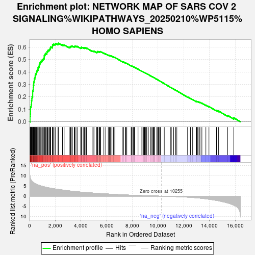

| | | Dataset | CD_deg |
| Phenotype | NoPhenotypeAvailable |
| Upregulated in class | na_pos |
| GeneSet | NETWORK MAP OF SARS COV 2 SIGNALING%WIKIPATHWAYS_20250210%WP5115%HOMO SAPIENS |
| Enrichment Score (ES) | 0.6305233 |
| Normalized Enrichment Score (NES) | 2.1466126 |
| Nominal p-value | 0.0 |
| FDR q-value | 0.0 |
| FWER p-Value | 0.0 |
Table: GSEA Results Summary

Fig 1: Enrichment plot: NETWORK MAP OF SARS COV 2 SIGNALING%WIKIPATHWAYS_20250210%WP5115%HOMO SAPIENS
Profile of the Running ES Score & Positions of GeneSet Members on the Rank Ordered List
| SYMBOL | RANK IN GENE LIST | RANK METRIC SCORE | RUNNING ES | CORE ENRICHMENT | | 1 | CFI | 35 | 9.606 | 0.0202 | Yes |
| 2 | CXCL1 | 36 | 9.544 | 0.0424 | Yes |
| 3 | CXCL6 | 54 | 9.013 | 0.0623 | Yes |
| 4 | STAT1 | 72 | 8.545 | 0.0811 | Yes |
| 5 | CXCL5 | 73 | 8.524 | 0.1010 | Yes |
| 6 | CXCL2 | 79 | 8.331 | 0.1200 | Yes |
| 7 | IFITM3 | 125 | 7.823 | 0.1355 | Yes |
| 8 | FAM83A | 152 | 7.581 | 0.1515 | Yes |
| 9 | SERPINE1 | 154 | 7.575 | 0.1691 | Yes |
| 10 | IFITM1 | 177 | 7.403 | 0.1849 | Yes |
| 11 | SAA2 | 193 | 7.282 | 0.2009 | Yes |
| 12 | CCL3 | 241 | 6.995 | 0.2143 | Yes |
| 13 | CXCL3 | 243 | 6.993 | 0.2305 | Yes |
| 14 | HIF1A | 244 | 6.992 | 0.2468 | Yes |
| 15 | FAM98A | 283 | 6.749 | 0.2601 | Yes |
| 16 | CCL2 | 289 | 6.724 | 0.2755 | Yes |
| 17 | CCL11 | 304 | 6.659 | 0.2901 | Yes |
| 18 | RRM2 | 322 | 6.589 | 0.3044 | Yes |
| 19 | CXCL16 | 327 | 6.565 | 0.3194 | Yes |
| 20 | SAA1 | 363 | 6.398 | 0.3321 | Yes |
| 21 | DDIT4 | 372 | 6.374 | 0.3465 | Yes |
| 22 | EIF4EBP1 | 421 | 6.205 | 0.3580 | Yes |
| 23 | CEBPB | 441 | 6.121 | 0.3710 | Yes |
| 24 | BST2 | 464 | 6.049 | 0.3837 | Yes |
| 25 | APOL1 | 530 | 5.832 | 0.3933 | Yes |
| 26 | BIRC5 | 554 | 5.727 | 0.4052 | Yes |
| 27 | CD163 | 599 | 5.627 | 0.4156 | Yes |
| 28 | CD14 | 658 | 5.487 | 0.4248 | Yes |
| 29 | CXCL9 | 669 | 5.453 | 0.4369 | Yes |
| 30 | PTGS2 | 729 | 5.357 | 0.4457 | Yes |
| 31 | RHEB | 749 | 5.314 | 0.4569 | Yes |
| 32 | EIF4E | 793 | 5.199 | 0.4663 | Yes |
| 33 | JUNB | 826 | 5.146 | 0.4763 | Yes |
| 34 | GGH | 876 | 5.013 | 0.4850 | Yes |
| 35 | SELP | 956 | 4.885 | 0.4915 | Yes |
| 36 | C1QBP | 995 | 4.823 | 0.5004 | Yes |
| 37 | CCNB1 | 1075 | 4.690 | 0.5064 | Yes |
| 38 | SRP19 | 1134 | 4.583 | 0.5135 | Yes |
| 39 | MYD88 | 1143 | 4.568 | 0.5236 | Yes |
| 40 | CCL4 | 1147 | 4.555 | 0.5340 | Yes |
| 41 | ATP13A3 | 1198 | 4.467 | 0.5414 | Yes |
| 42 | CTSL | 1239 | 4.400 | 0.5491 | Yes |
| 43 | SRP54 | 1348 | 4.253 | 0.5524 | Yes |
| 44 | GTSE1 | 1353 | 4.249 | 0.5620 | Yes |
| 45 | C1R | 1411 | 4.188 | 0.5682 | Yes |
| 46 | GTF2F2 | 1452 | 4.142 | 0.5754 | Yes |
| 47 | CCNB2 | 1538 | 4.019 | 0.5795 | Yes |
| 48 | MMP25 | 1590 | 3.959 | 0.5856 | Yes |
| 49 | IL1R2 | 1616 | 3.929 | 0.5932 | Yes |
| 50 | ACTG1 | 1643 | 3.886 | 0.6006 | Yes |
| 51 | VPS18 | 1775 | 3.766 | 0.6013 | Yes |
| 52 | IRF9 | 1786 | 3.758 | 0.6095 | Yes |
| 53 | IRAK1 | 1788 | 3.755 | 0.6181 | Yes |
| 54 | RRAS | 1859 | 3.681 | 0.6224 | Yes |
| 55 | NLRP3 | 1977 | 3.546 | 0.6234 | Yes |
| 56 | C1S | 2034 | 3.489 | 0.6281 | Yes |
| 57 | CFP | 2210 | 3.323 | 0.6251 | Yes |
| 58 | ADAM9 | 2247 | 3.293 | 0.6305 | Yes |
| 59 | APOD | 2560 | 3.017 | 0.6183 | No |
| 60 | APOC1 | 2687 | 2.911 | 0.6174 | No |
| 61 | IFIH1 | 3087 | 2.579 | 0.5988 | No |
| 62 | EGR1 | 3158 | 2.528 | 0.6004 | No |
| 63 | HBB | 3188 | 2.507 | 0.6044 | No |
| 64 | LARP1 | 3246 | 2.461 | 0.6066 | No |
| 65 | CASP3 | 3332 | 2.404 | 0.6070 | No |
| 66 | CCL8 | 3473 | 2.307 | 0.6038 | No |
| 67 | IL33 | 3517 | 2.277 | 0.6064 | No |
| 68 | IFI44L | 3609 | 2.213 | 0.6060 | No |
| 69 | HLA-DRA | 3705 | 2.157 | 0.6051 | No |
| 70 | CASP5 | 3979 | 1.999 | 0.5930 | No |
| 71 | IFI6 | 4034 | 1.967 | 0.5942 | No |
| 72 | MIB1 | 4041 | 1.963 | 0.5984 | No |
| 73 | TRIM59 | 4175 | 1.890 | 0.5946 | No |
| 74 | CASP8 | 4272 | 1.843 | 0.5930 | No |
| 75 | G3BP2 | 4323 | 1.819 | 0.5942 | No |
| 76 | VPS33A | 4425 | 1.771 | 0.5921 | No |
| 77 | RAC1 | 4871 | 1.546 | 0.5683 | No |
| 78 | MTOR | 4951 | 1.513 | 0.5670 | No |
| 79 | JAK1 | 5018 | 1.478 | 0.5663 | No |
| 80 | VPS41 | 5213 | 1.401 | 0.5577 | No |
| 81 | CFH | 5253 | 1.386 | 0.5585 | No |
| 82 | CCL20 | 5276 | 1.374 | 0.5603 | No |
| 83 | CCR5 | 5281 | 1.371 | 0.5633 | No |
| 84 | CLCC1 | 5321 | 1.351 | 0.5640 | No |
| 85 | IFI27 | 5429 | 1.303 | 0.5605 | No |
| 86 | TOMM70 | 5454 | 1.296 | 0.5620 | No |
| 87 | NFKB2 | 5493 | 1.279 | 0.5626 | No |
| 88 | MX1 | 5528 | 1.265 | 0.5635 | No |
| 89 | FYN | 5782 | 1.170 | 0.5506 | No |
| 90 | PRKCQ | 5930 | 1.118 | 0.5442 | No |
| 91 | TRPM2 | 6125 | 1.044 | 0.5347 | No |
| 92 | MLST8 | 6211 | 1.012 | 0.5318 | No |
| 93 | PARP2 | 6279 | 0.987 | 0.5300 | No |
| 94 | RPS6 | 6343 | 0.963 | 0.5283 | No |
| 95 | CD226 | 6502 | 0.913 | 0.5207 | No |
| 96 | CAMK4 | 6536 | 0.901 | 0.5208 | No |
| 97 | PTPN6 | 6636 | 0.865 | 0.5167 | No |
| 98 | CD2 | 7261 | 0.663 | 0.4799 | No |
| 99 | SDF2 | 7293 | 0.652 | 0.4795 | No |
| 100 | ITIH4 | 7295 | 0.652 | 0.4809 | No |
| 101 | HLA-DRB5 | 7447 | 0.607 | 0.4731 | No |
| 102 | VPS11 | 7496 | 0.593 | 0.4715 | No |
| 103 | OS9 | 7567 | 0.573 | 0.4685 | No |
| 104 | CCR6 | 7906 | 0.481 | 0.4488 | No |
| 105 | LCK | 7936 | 0.473 | 0.4481 | No |
| 106 | CD3E | 7981 | 0.460 | 0.4465 | No |
| 107 | CCL22 | 8077 | 0.436 | 0.4417 | No |
| 108 | AKT1S1 | 8152 | 0.419 | 0.4381 | No |
| 109 | CD247 | 8190 | 0.411 | 0.4368 | No |
| 110 | CASP9 | 8441 | 0.347 | 0.4222 | No |
| 111 | IL18RAP | 8686 | 0.296 | 0.4079 | No |
| 112 | CD3G | 8758 | 0.279 | 0.4042 | No |
| 113 | MAVS | 8876 | 0.254 | 0.3976 | No |
| 114 | IFIT1 | 8913 | 0.245 | 0.3959 | No |
| 115 | LGALS3BP | 8927 | 0.241 | 0.3957 | No |
| 116 | NLRP1 | 8952 | 0.236 | 0.3947 | No |
| 117 | MDN1 | 9034 | 0.218 | 0.3903 | No |
| 118 | CCL21 | 9089 | 0.205 | 0.3874 | No |
| 119 | ZAP70 | 9126 | 0.197 | 0.3857 | No |
| 120 | CXCL12 | 9242 | 0.176 | 0.3790 | No |
| 121 | PIAS1 | 9410 | 0.144 | 0.3691 | No |
| 122 | TRO | 9465 | 0.133 | 0.3660 | No |
| 123 | PITRM1 | 9546 | 0.117 | 0.3614 | No |
| 124 | HLA-DRB1 | 9624 | 0.101 | 0.3569 | No |
| 125 | CD8A | 9674 | 0.094 | 0.3541 | No |
| 126 | CXCL13 | 9708 | 0.088 | 0.3523 | No |
| 127 | PMPCB | 9714 | 0.087 | 0.3522 | No |
| 128 | ITCH | 9905 | 0.057 | 0.3406 | No |
| 129 | CTSZ | 9958 | 0.048 | 0.3375 | No |
| 130 | IKBKG | 10031 | 0.036 | 0.3332 | No |
| 131 | NEK9 | 10053 | 0.032 | 0.3319 | No |
| 132 | GP1BA | 10087 | 0.026 | 0.3300 | No |
| 133 | FOS | 10183 | 0.011 | 0.3242 | No |
| 134 | TP53I3 | 10483 | -0.038 | 0.3058 | No |
| 135 | STEAP3 | 10988 | -0.138 | 0.2752 | No |
| 136 | JUN | 11031 | -0.147 | 0.2729 | No |
| 137 | RIGI | 11214 | -0.189 | 0.2622 | No |
| 138 | INTS4 | 11370 | -0.227 | 0.2531 | No |
| 139 | GABARAPL2 | 11460 | -0.255 | 0.2483 | No |
| 140 | CCL5 | 12304 | -0.506 | 0.1976 | No |
| 141 | IRF3 | 12322 | -0.512 | 0.1977 | No |
| 142 | TNFSF10 | 12522 | -0.591 | 0.1868 | No |
| 143 | VPS16 | 12691 | -0.667 | 0.1781 | No |
| 144 | EIF4A2 | 12965 | -0.817 | 0.1632 | No |
| 145 | MAPK8 | 12998 | -0.831 | 0.1631 | No |
| 146 | ATE1 | 13058 | -0.870 | 0.1615 | No |
| 147 | SIGMAR1 | 13103 | -0.892 | 0.1609 | No |
| 148 | WDR74 | 13191 | -0.936 | 0.1577 | No |
| 149 | ITIH3 | 13260 | -0.981 | 0.1558 | No |
| 150 | NFATC3 | 13410 | -1.095 | 0.1492 | No |
| 151 | DEPTOR | 13721 | -1.326 | 0.1332 | No |
| 152 | VPS36 | 13961 | -1.526 | 0.1220 | No |
| 153 | COQ8B | 14548 | -2.086 | 0.0908 | No |
| 154 | MOV10 | 14711 | -2.275 | 0.0862 | No |
| 155 | RTN4 | 15418 | -3.339 | 0.0505 | No |
| 156 | ACE2 | 15895 | -4.430 | 0.0315 | No |
Table: GSEA details [plain text format]
Fig 2: NETWORK MAP OF SARS COV 2 SIGNALING%WIKIPATHWAYS_20250210%WP5115%HOMO SAPIENS: Random ES distribution
Gene set null distribution of ES for NETWORK MAP OF SARS COV 2 SIGNALING%WIKIPATHWAYS_20250210%WP5115%HOMO SAPIENS